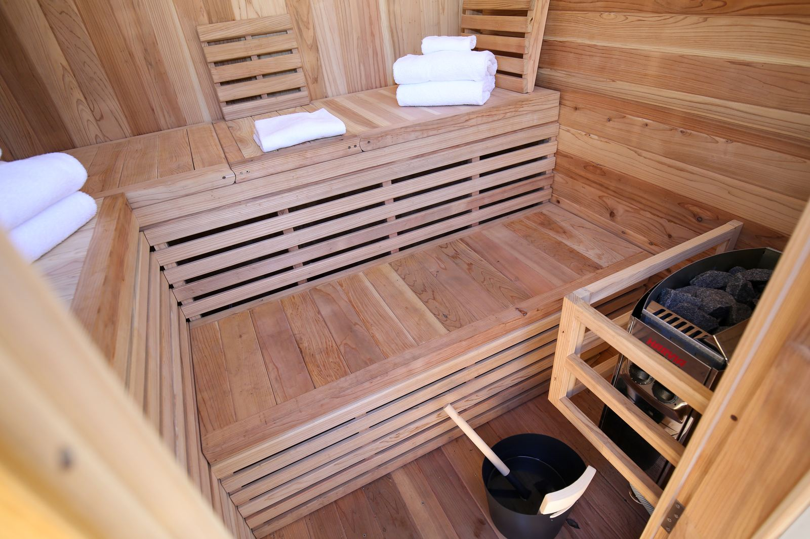
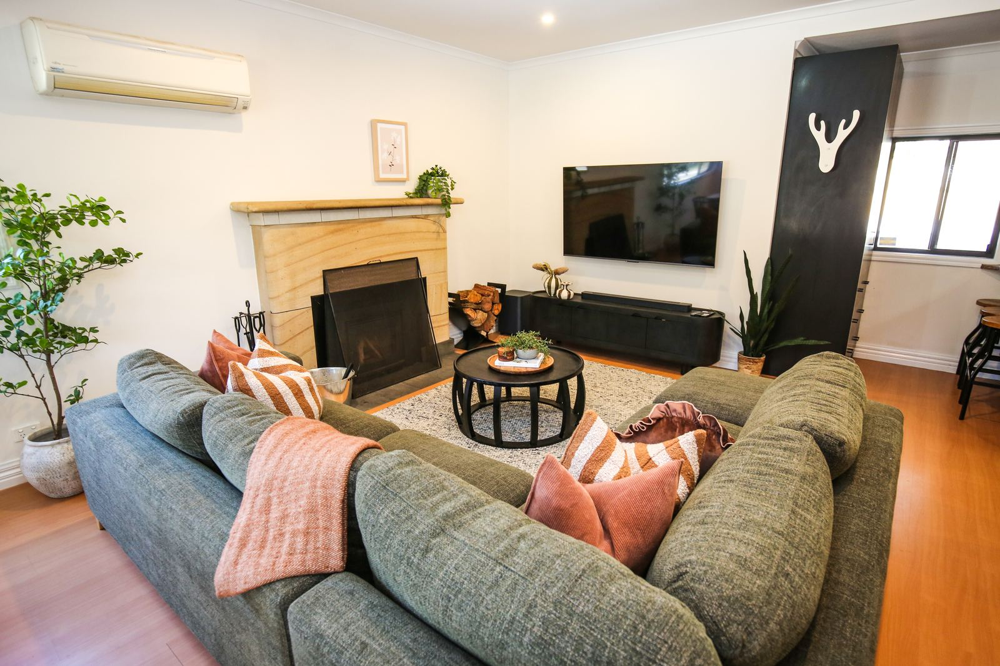
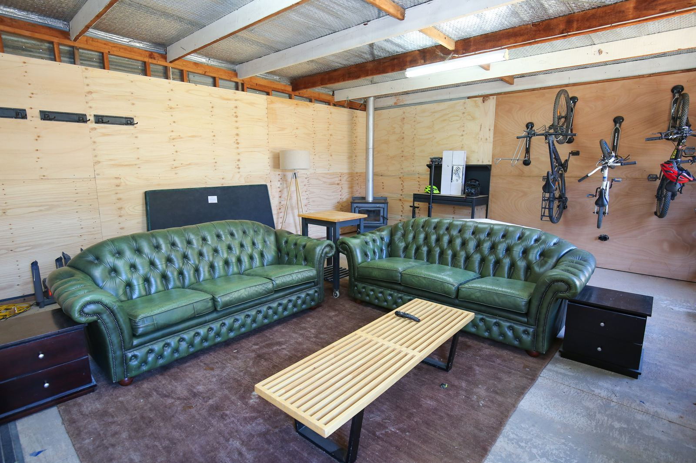
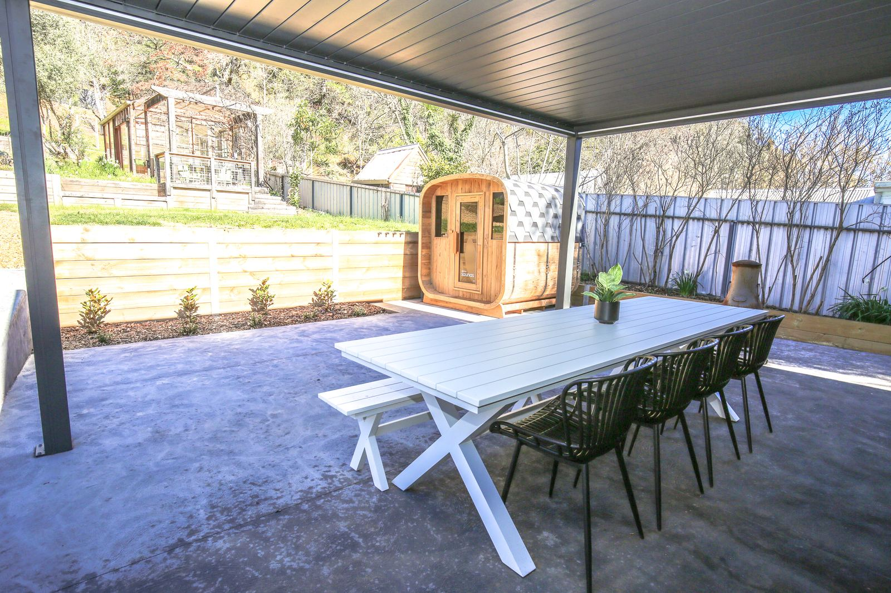
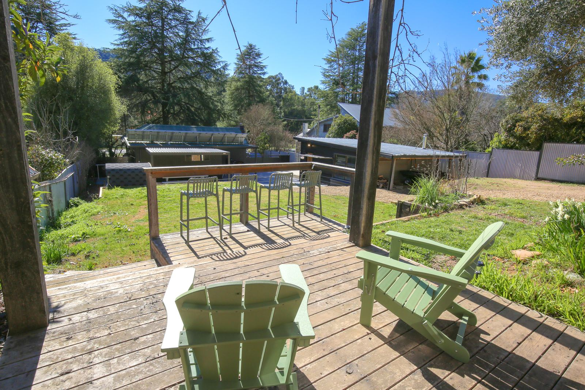

The private sauna and the fires
The sauna

It's a private outdoor electric sauna that seats six, ready in about 30 minutes. Switch it on about 30 minutes before you want to use it.
The sauna is outdoors, and there's an outdoor shower to rinse off under. Both are private: they are for your group only. The whole house is yours, and nobody else is on site.
Heat up, rinse off under the outdoor shower, then sit by the fire pit or one of the two enclosed wood fires.
None of the security cameras covers the sauna or the outdoor shower. The full camera statement is at the bottom of this page.
The wood fires
There are two enclosed wood fires: one in the living room and one in the garage lounge. Firewood is supplied from April to September.

The garage lounge is a second living room with two three-seater couches, a smart TV and a wood fire. It gives a group of six two separate rooms to sit in on a cold night.

Outside
- Fire pit and chiminea
- Covered alfresco area with a gas BBQ and an outdoor table for eight
- Glasshouse with a timber deck and mountain views
- Fully fenced yard with a gate at the back onto walking tracks in the state forest
The fire pit and chiminea can't be lit on Total Fire Ban days. During the Fire Danger Period over the warmer months, conditions apply: light wind, a clear area around the fire and someone watching it. Check the Country Fire Authority's advice for the day before lighting either.


Security cameras
There are three exterior security cameras: one on the driveway and front entrance, one on the wood pile, and one on the rear fence line facing the bush behind the property. None covers the sauna, outdoor shower, alfresco area, yard seating or any indoor space.